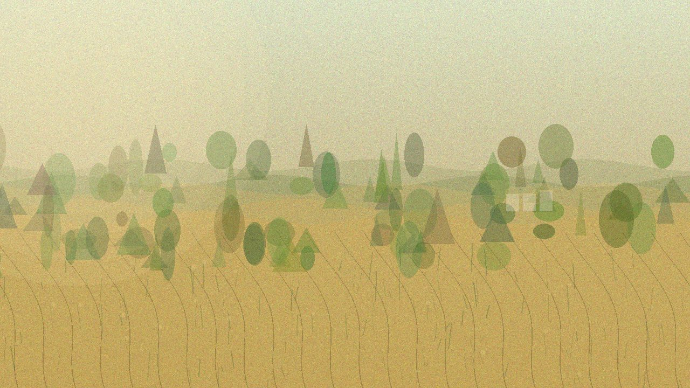

Главная / Тамбовская область

Тамбовская область
Что посадить
Что посадить
в Тамбовской области
Одна из самых тёплых областей ЦФО: северная лесостепь мягче, центр универсален, юг требует внимания к влаге и суховеям.
Умеренно тёплая лесостепь: хорошо работают овощи, плодовый сад, ягоды и ранние тёплые культуры.
Открыть страницу зоны → Центральные чернозёмыОчень продуктивная зона для огорода и сада: томаты, тыквы, кукуруза и плодовые идут уверенно при поливе.
Открыть страницу зоны → Южная сухая степьСамая тёплая и сухая зона: сильны бахчевые и виноград, но без влаги урожайность резко падает.
Открыть страницу зоны →